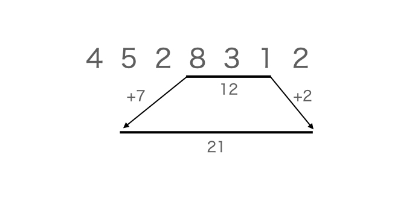
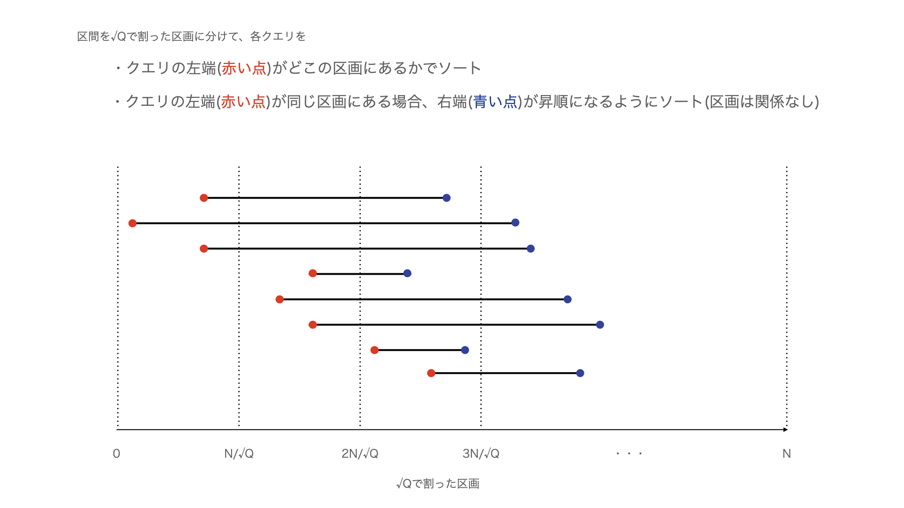

前のページ
Mo's Algorithmは、区間に関するクエリの答えるためのアルゴリズムです。
Mo's Algorithmは、以下の条件を満たす問題に対応することができます。
条件１ : 値の更新がない
条件２ : 区間 [ l , r ) の場合のクエリの解がわかっているときに、区間 [l-1,r) , [l+1,r) , [l,r-1) , [l,r+1) のクエリの答えを高速に計算できる。
アルゴリズムの大まかな方針は、区間 [ a , b ) のクエリに対する解がわかっているときに、区間 [ a , b ) を左右に拡大/縮小し、計算しながら次のクエリの区間 [ c , d ) に近づけていくというものです。
具体例で言うと、区間[l,r)の総和を求めるクエリの場合、図のように区間を遷移させます

しかし、Q 個の区間を愚直に次の区間に遷移させていると、計算量が大きくなってしまいます。
よって、区間の遷移をより効率的に行う必要があります。
以下の図を見てください。

図のように並べた区間(クエリ)を、上から遷移しながら処理していきます。
このとき、クエリの左端(図の赤い点)は一度の遷移で O( √Q ) しか動かないことが図からわかります。
また、クエリの右端(図の青い点)も、左端が同じ区間では照準になっており、左端が √Q 区画に分かれていることから、最大で N 回右に移動するという操作を √Q 回行うことになります。
クエリが Q 回飛んでくることから、左端の移動は O( Q√Q ) 、右端の遷移は O( N√Q ) の計算量になります。
なお、区画の番号が奇数番目の時、右端(青い点)を降順ソートにすると、右端が左右に移動することになり、効率が良くなります。
また、今回の解説では区画を √Q 個に分けていましたが、必ずしも √Q が最適とは限りません。定数倍をかけたり、いろいろ試すと高速化が期待できます。
サンプルコードを貼っておきます。
- /*
- Mo's Algorithmの型
- 区間の最大長(数列の長さ)をN、クエリの個数をQとする
- クエリの左端の区間を√Qで割り(切り捨て)、左端の値でクエリを√Q個の区間に割り振る(leftを√Qで割った数でソートする)
- そうすることで、√Q個の各区間で、左端を動かしてもO(√Q)の計算量になる
- また、同じ区間にあるクエリは右端の値でソートする
- すると、同じ区間内のクエリは、右端を移動しても単調増加であることから計算量はO(N)になる
- このライブラリは、例題:ABC174-Fに対応しています
- テンプレートは元の数列の型 T と、答えを返す時の型 T2を与える
- コンストラクタには元の数列Aと区間の長さN(0-index)を与える。
- (Nが与えられなかったときは、NはAのサイズとする)また、0-indexなので、Nに対して、区間は[0,N)をとる
- クエリをadd_queryで与えたのちに、buildでQやNなどの変数を初期化して計算する(クエリのidは入れた順)
- indexを表す値は0-indexとし、区間は半開区間( [ l , r ) := l以上 r未満 )とする
- */
- template<class T , class T2>
- class MosAlgorithm{
- private:
- //クエリの構造体
- struct Query{
- int left,right,id;
- Query(){}
- Query(int left ,int right,int id):left(left),right(right),id(id){}
- };
-
- /*
- クエリの処理の関数や、変数
- */
- public:
- long long border;//クエリのleftを分ける境界線(√Qとか)。ただし、√Qが必ずしも最適ではないので、場合によって定数倍をかけてみたりすると良い
- int N,Q;//数列のサイズ(区間の最大サイズ)と、クエリの個数。ただし、Nは0-indexed
- vector<T> A;//数列
- vector<T2> ans;//答えを格納するvector
- int Left,Right;//今見ている半開区間 : [ Left , Right ) の左右
- vector<Query> Queries;
- //例題用
- vector<int> cnt;//cnt[c];=色cが、今見ている区間内に何個あるか
- int sum = 0;//今見ている区間内の色の種類数
- //クエリの区間を拡大した時の更新関数(現在見ている区間に、iを加える(iは区間の端と隣接している必要がある))
- void add(int i){
- if(cnt[A[i]] == 0)sum++;//種類数の更新
- cnt[A[i]]++;
- return;
- }
- //クエリの区間を縮小したときの更新関数(現在見ている区間から、iを取り除く(iは区間の端である必要がある))
- void remove(int i){
- cnt[A[i]]--;
- if(cnt[A[i]] == 0 )sum--;//種類数の更新
- return;
- }
- //i番目のクエリの答えを書き込む
- void write(int i){
- ans[i] = sum;
- }
- public:
- MosAlgorithm(){}
- MosAlgorithm(vector<T> A_ , int N_ = -1){
- A = A_;
- if(N_==-1)N = A.size();
- else N = N_;
- }
- /*
- クエリを追加する(l,r,は半開区間 : [ l , r ) )
- */
- void add_query(int l , int r){
- Queries.emplace_back(l,r,(int)Queries.size());
- }
- /*
- コンストラクタやadd_queryで与えられた問題を解いて、ans配列に書き込む
- */
- void build(){
- //変数の初期化
- Q = Queries.size();//クエリの個数の初期化
- vector<T2>(Q).swap(ans);//ansの初期化
- vector<int>(N+1).swap(cnt);
- sum = 0;
- border = (long long)sqrt(Q) + 1;
-
- //クエリをソート
- sort(Queries.begin() , Queries.end() , [&](Query a , Query b){
- int aL = a.left/border;
- int bL = b.left/border;
- if( aL < bL )return true;
- else if( aL == bL ){
- if(aL%2==0)return a.right<b.right;//右は交互に左右に動かす方がメモリアクセスの点で高速になる
- else return !(a.right<b.right);
- }else return false;
- });
-
- Left = 0;
- Right = 0;
- for(Query q : Queries){
- //今見ている区間を、見ているクエリの区間に拡大(縮小)する
- int next_l = q.left;
- int next_r = q.right;
-
- //広げてから縮小する！！
- while(next_l < Left)add(Left-1),Left--;
- while(Right < next_r)add(Right),Right++;
- while(Left < next_l)remove(Left),Left++;
- while(next_r < Right)remove(Right-1),Right--;
-
- write(q.id);
- }
- return;
- }
- };